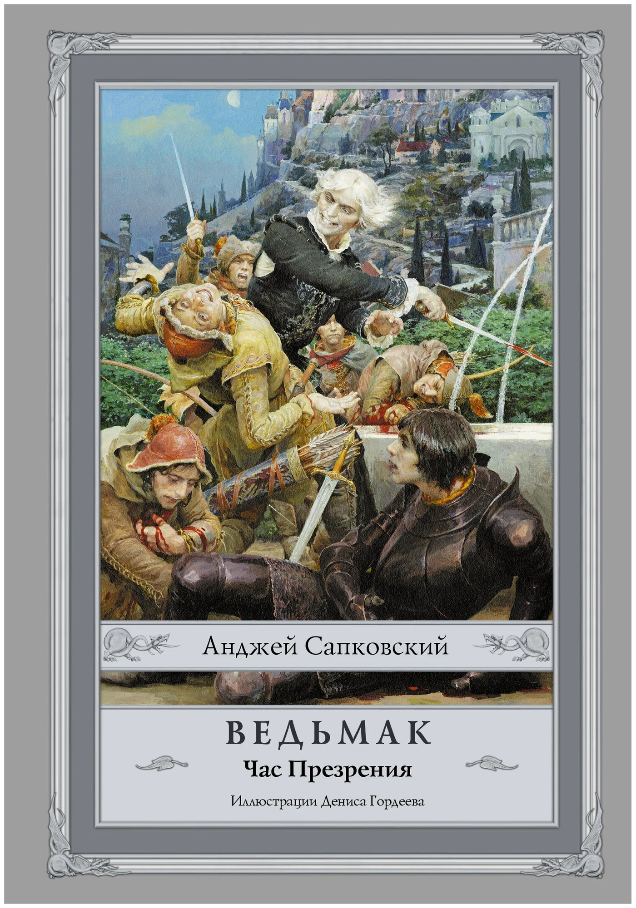
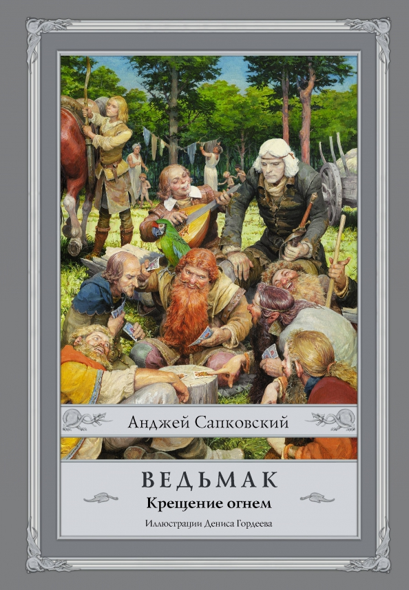
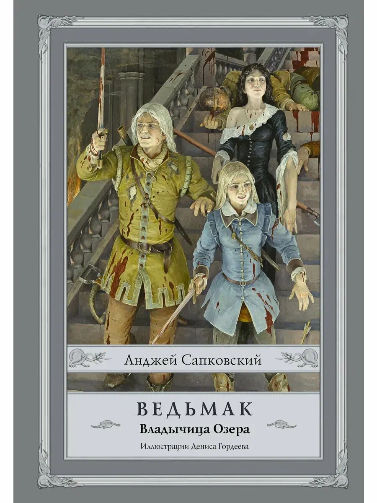
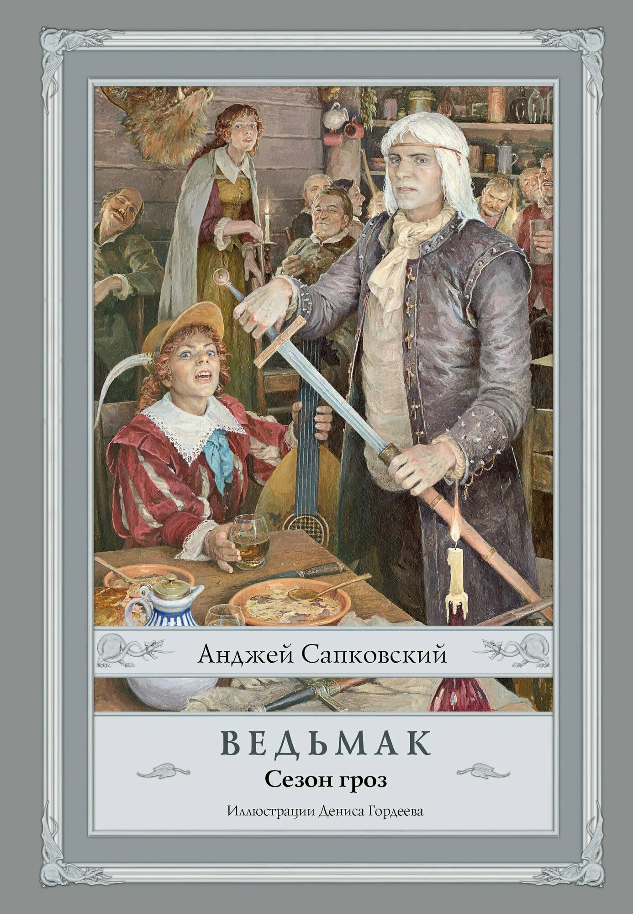
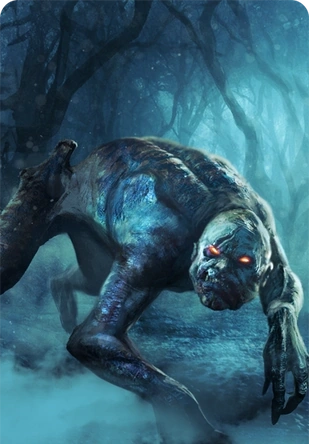
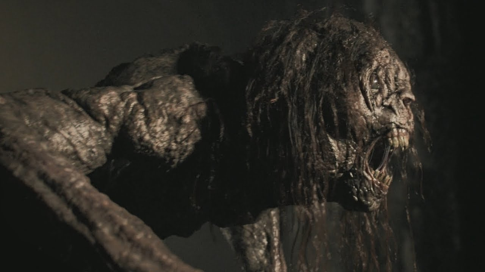
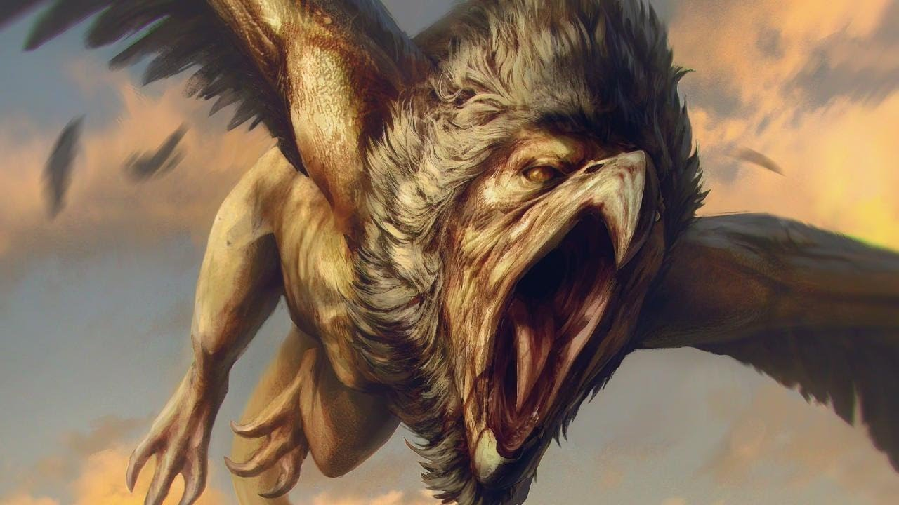
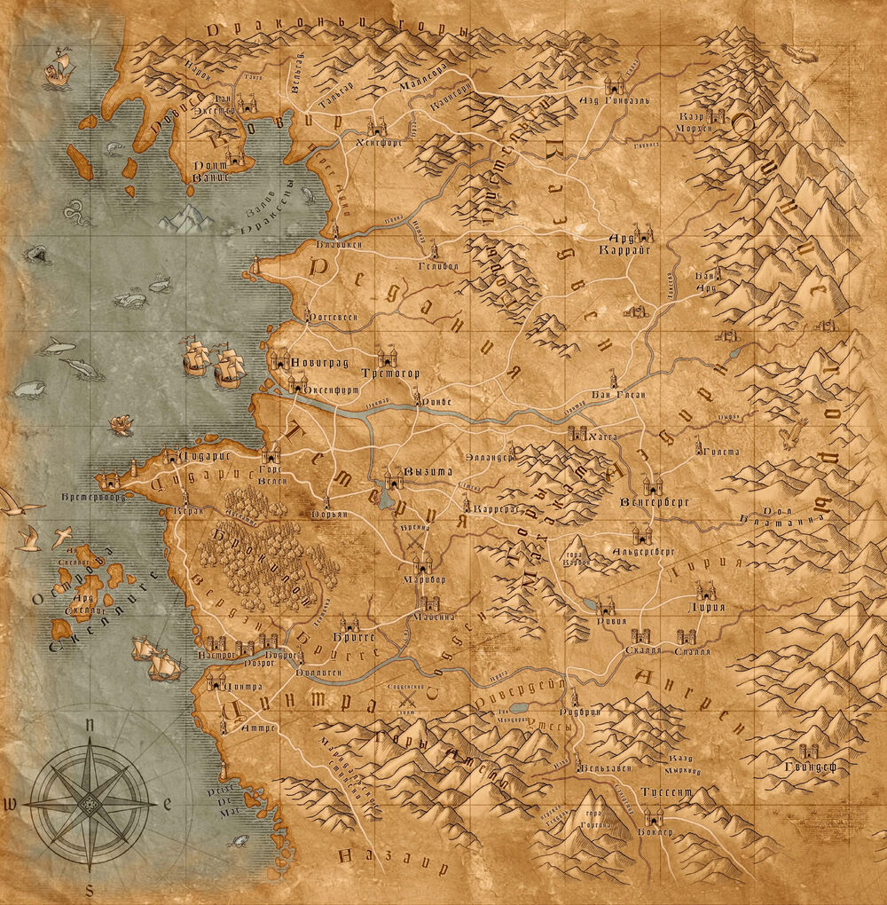

Мир Ведьмака

Геральт из Ривии
Профессиональный охотник на чудовищ, ведьмак Школы Волка. Обладает сверхчеловеческими способностями, мастер фехтования и знаков. Прошёл через множество испытаний, спасал королевства и искал своё предназначение. Его путь неразрывно связан с Цириллой и Йеннифэр. Носит два меча: стальной для людей и серебряный для чудовищ. Холоден внешне, но предан тем, кого любит.

Цирилла Фиона Элен Рианнон
Наследница престола Цинтры, источник Великой Силы, дитя Предназначения. Обучалась у Геральта и Йеннифэр. Обладает способностью перемещаться между мирами и временами. Смелая, решительная, с твёрдым характером. Её судьба переплетена с политическими интригами и древними пророчествами. Ключевая фигура в борьбе за будущее Континента.

Йеннифэр из Венгерберга
Могущественная чародейка, наставница Цири. Сильная, независимая, с непростой судьбой и глубокой связью с Геральтом. Прошла путь от изгоя до одной из влиятельнейших женщин Континента. Владеет магией огня и иллюзий. Её характер — сочетание гордости, мудрости и безграничной любви к близким. Готова на всё ради тех, кого считает семьёй.

Трисс Меригольд
Чародейка из Марибора, советница королей. Добрая, преданная, с особым отношением к Геральту и Цири. Специалист по целебной магии и алхимии. Участвовала в политических интригах и борьбе с дикой охотой. Её мягкость скрывает стальную волю. Верный друг и надёжный союзник в самых тёмных временах.

Весемир
Старейший ведьмак Школы Волка, наставник Геральта. Мудрый, опытный, хранитель традиций Каэр Морхена. Прожил более двух веков, видел расцвет и упадок ордена ведьмаков. Обучал молодых ведьмаков, передавая знания о монстрах и выживании. Его гибель стала поворотным моментом в судьбе Геральта и Цири. Символ чести и долга.

Эмгыр вар Эмрейс
Император Нильфгаарда, отец Цири. Жестокий политик, стремящийся к власти и контролю над миром. Прошёл путь от изгнанника до правителя величайшей империи. Его амбиции движут войнами и судьбами королевств. Сложные отношения с дочерью и Геральтом определяют ключевые события саги. Стратег, манипулятор, человек без сантиментов.

Лютик (Ярре)
Бард, поэт, друг Геральта. Мастер слова и музыки, чьи баллады прославили подвиги Белого Волка. Храбр не на поле боя, а в верности друзьям. Его остроумие и харизма спасали не раз. Свидетель и летописец великих событий. Связующее звено между миром людей и ведьмаков. Символ искусства, сохраняющего память о героях.

Последнее желание
Последнее желание
Сборник рассказов, знакомящий с Геральтом, Йеннифэр и миром Ведьмака. История их первой встречи и судьбоносных решений. Включает легенды о джинне, стрыге, русалке и других существах.
Читать
Меч Предназначения
Меч Предназначения
Продолжение истории Геральта. Связь с Цириллой, политические интриги и неизбежность Предназначения. Рассказы о битвах, моральных дилеммах и цене профессии ведьмака.
Читать
Кровь Эльфов
Кровь Эльфов
Первый роман саги. Цири под опекой Геральта и Йеннифэр в Каэр Морхене. Начало обучения девочки, раскрытие её сил. Политический заговор против Цинтры и Нильфгаарда.
Читать
Час Презрения
Час Презрения
Цири бежит из Каэр Морхена, Геральт отправляется на её поиски. Йеннифэр участвует в Совете Чародеев. Нарастание конфликта между Севером и Нильфгаардом.
Читать
Крещение Огнём
Крещение Огнём
Геральт, Лютик и новая команда ищут Цири в разорённом войной Велене. Цири скитается по лесам, встречая разбойников и друзей. Йеннифэр в плену у Нильфгаарда.
Читать
Владычица Озера
Владычица Озера
Финал основной саги. Битва за Бренну, судьба Цири и Геральта. Йеннифэр освобождена, но цена высока. Цири проходит через миры, встречая альтернативные версии реальности.
Читать
Сезон Гроз
Сезон Гроз
Эпилог саги. Геральт и Йеннифэр в Погосте, финальная встреча с Цири. Развязка древних пророчеств. Тема памяти, наследия и продолжения жизни через поколения.
ЧитатьБестиарий

Гуль
Нежить, питающаяся плотью. Слаб к серебру и огню. Опасен в стае. Обитает на кладбищах и полях сражений.

Стрыга
Проклятая принцесса. Смертельна в ночи. Излечима снятием проклятия. Обладает сверхсилой и скоростью.

Грифон
Хищный зверь с телом льва и крыльями орла. Любит высокие скалы. Атакует с воздуха, опасен для караванов.
Карта Континента

Цитаты из Саги
«Зло — это зло. Меньшее, большее, среднее — всё едино. Границы условны. Если уж выбирать из двух зол, я предпочитаю не выбирать вообще.»
«Предназначение — это не приговор. Это вызов. И каждый сам решает, принять его или отвергнуть.»
«Не всё то золото, что блестит. И не всё то монстр, что рычит.»
Хронология Событий
Основание Каэр Морхена, начало подготовки ведьмаков
Рождение Геральта, мутации в Каэр Морхене
Встреча Геральта и Йеннифэр, история с джинном
Рождение Цири, падение Цинтры
Основные события саги: поиски Цири, война с Нильфгаардом